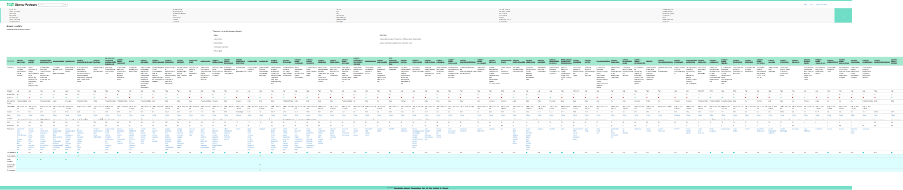
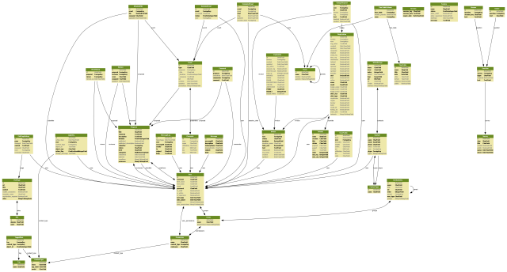

Mjanaging Tjechnical Djebt
- When you fix one bug only to create another
- When you can’t deliver a feature because you don’t know what will break
- When you fix one bug only to create another
- When you can’t deliver a feature or security patch because you don’t know what will break
- If you’re using a rapid development framework and can’t rapidly develop
- “It works for me”
-
 Everything is on fire all the time
Everything is on fire all the time
Some tips
- YOU: Change how you code
- TEAM: Workflow practices you can put in place as a team
- ORG: Organizational changes
Tests. Do it.
When to test
If you're making an assumption, you should be writing a test.
You may decide to scrimp on tests in the beginning, but regression testing should be mandatory.
You will sleep better at night with good test coverage.
Test your assumption
def zipcode(s):
"""
Get the 5 digit zipcode from any zipcode format.
>>> zipcode('12345')
"12345"
>>> zipcode('12345-6789')
"12345"
>>> zipcode(12345)
"12345"
>>> zipcode(1337)
"01337"
>>> zipcode(None)
ValueError: s must be a US postal zip code
"""
return s[:5]
Don't have a single test?
Gotta start somewhere.
from django.test import TestCase
class HomeTests(TestCase):
def test_homepage_loads(self):
self.client.get('/')
blog.doismellburning.co.uk/2015/08/05/the-most-efficient-django-test/
Coverage
Coverage is just a tool to help you figure out where you're missing tests.
100% coverage isn't useful if you have crappy tests.
Signs your tests are crappy
- Can other people read and extend them?
- Are tests getting maintained? Or are they a source of frustration?
- Do your tests describe the problem in a way where someone could throw away the code and use the tests as a spec?
Bitrot / Software entropy
If you're not touching something, it's getting worse
If you don't have the manpower to continously touch all your code and documentation, that's a smell
Improvement Kata - Mike Rother
Applications age like fish, data ages like wine
Make each developer more effective
Continous integration
“Any task you do at least once a month should take less time than it takes to get a cup of coffee” †
- Jenkins
- TravisCI
- Tox
- docs.python-guide.org/en/latest/scenarios/ci/


Code quality
- Practice makes perfect. Always be iterating.
- Keep things simple. Code that requires less context to understand is more readable.
- Know your audience.
- Choose readability over performance.
import this
>>> improt this
File "<stdin>", line 1
improt this
^
SyntaxError: invalid syntax
>>> import this
The Zen of Python, by Tim Peters
Beautiful is better than ugly.
Explicit is better than implicit.
Simple is better than complex.
Complex is better than complicated.
Flat is better than nested.
Sparse is better than dense.
Readability counts.
Special cases aren't special enough to break the rules.
...
from operators import attrgetter
friends = [
aquacorg,
corgnelius,
stumphery,
gatsby,
scout,
tibby,
winston,
]
# Which is better?
accounts = map(attrgetter('instagram'), friends)
accounts = [x.instagram for x in friends]
Related topics
- #nocomments – Do comments help or hurt readability?
- Cyclomatic complexity – quantify readability
- McCabe
- PEP8
- PyFlakes
Code review
This is the single most practical way to get better.
People take too much time to review
I'm the boss
We need to push this hotfix for production ASAP
Sleep on it
Practice with others on open source projects
As iron sharpens iron, so one person sharpens another.
Pull requests
The rule is: one pull request = one change
Boy scout rule
Leave this world a little better than you found it.
– Robert Baden Powell
If you have to touch a test to clean something, leave it alone for now.
Code review is more than reviewing code
- Repeatable?
- Documentated?
- Maintainable? (Does the feature justify the technical debt?)
Technical debt note
A fiscal note is a written estimate of the costs, savings, revenue gain, or revenue loss that may result from implementation of requirements in a bill or joint resolution. It serves as a tool to help legislators better understand how a bill might impact the state budget as a whole, individual agencies, and in some instances, local governments.
Pair programming
The best way to up code quality and share knowledge
- tmux + vim
- Driver + Navigator
- Ping pong pair programming
Teams
Guess what? Software teams are just like other teams
Hire coworkers that share your same goal (caring about improving processes)
Past you is the worst coworker ever
Culture
- Work to get faster feedback loops
- Learn how to say "NO"
- Embrace failure
- Make yourself obsolete. Work like you're training your replacement
- Go on vacation without your laptop
- Admit that technical debt is a problem
- The seeds of technical debt are sown upstream by product development
- Treat paying off technical debt as a feature
-
Write up concrete plans to reduce technical debt as actionable items with definitions of done:
Upgrade Django to version 1.4.23
Change views in app
Yto use new base view from appX
| Task |  |
||
|---|---|---|---|
| Reduce homepage query count | |
┬──┬ | |
| Fix inconsistent migrations | |
┬───┬ | |
| Add CSRF |
|
┬─┬ | |
| Refactor Polls views to CBV | ┬─┬ | ||
| Upgrade from Django 1.5 to 1.8 | |
┬─────┬ |
Agile
Always be iterating the process.
Django is great
Test
Less boilerplate
Great community
Don't customize the Django admin
The admin is a developer interface, not a CMS
Writing your own seems like it's more technical debt, but you'll end up with a better user experience
A partial list of admin packages you can use instead of coding your own:
Clean as you cook
Delete code! That's what source control is for.
If you think you'll need to toggle something, don't use comments, use a feature switch.
Open tickets for things you find (see boy scout rule)Naming things
Is it greppable?
Use unique app and model names
Name variables (especially in tests) so they read like English
Readable tests
Keep boilerplate out.
class ArticleManagerTests(TestCase):
def test_stuff(self):
a = Article(active=True,
title='Corgi Beach Day',
slug='corgi-beach-day',
text='Corgs got sand on their stumpers'
pub_date='2015-09-31')
self.assertIn(a, Article.objects.active())
def test_active_returns_only_active_articles(self):
article = ArticleFactory(active=True)
self.assertIn(article, Article.objects.active())
Unique names
$ ./manage.py shell_plus
# Shell Plus Model Imports
from django.contrib.admin.models import LogEntry
from django.contrib.auth.models import Group, Permission, User
from django.contrib.contenttypes.models import ContentType
from django.contrib.sessions.models import Session
from tx_elevators.models import Building, Elevator
# Shell Plus Django Imports
from django.utils import timezone
from django.conf import settings
from django.core.cache import cache
from django.db.models import Avg, Count, F, Max, Min, Sum, Q, Prefetch
from django.core.urlresolvers import reverse
from django.db import transaction
>>> Elevator.objects.count()
51952
Avoid the test client
Don’t use it! For unit tests.
Do Use it! For integration tests
urls
request middleware
views (dispatch/get/get_context_data)
response middleware
context_processorAvoid model inheritance
Mixins and Base classes
Hurts readability and performance

Stay fresh
requirements.txt:
Every pull request, if a version can be bumped, bump it.
$ pip list --outdated
$ bundle outdated
$ npm outdated
This only works if you have test coverage!
Trading technical debt
- Freezing content (Taco Bell Future)
- Deciding up front what you're optimizing for
- Adding deliberate code smells
The exceptions
My general rule is if you can do everything in one screen of code, you write as crappy as you want.
If you're writing throw away code, it should truly be disposable.
Reading
Reading (for real)

Similar discussions
- Microservices vs Monoliths
- Single responsibility principle
- Not invented here syndrome
- Feature creep
- Insert product development buzzword here *
Homework
- Get frustrated
- Get lazy – Automate away routine tasks
- Faster feedback loops
- Always be touching
- Treat fixing technical debt as a feature
- Clean as you code
- Foster a good coding culture
- Everything must be repeatable
- Plan ahead for the whole lifecycle
Thanks!
github/crccheck/tech-debt-talk
docker run --rm -p 8000:1947 crccheck/tech-debt